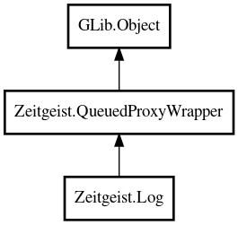

Log
Object Hierarchy:

Description:
public class Log :
QueuedProxyWrapper
Primary access point for talking to the Zeitgeist daemon
Log encapsulates the low level access to the Zeitgeist daemon. You can use
it to manage the log by inserting and deleting entries as well as do queries on the logged data.
It's important to realize that the #ZeitgeistLog class does not expose any API that does synchronous communications with the message bus
- everything is asynchronous. To ease development some of the methods have variants that are "fire and forget" ignoring the normal return
value, so that callbacks does not have to be set up.
Content:
Static methods:
Creation methods:
Methods:
- public string datapath ()
Gets datapath of the running Zeitgeist daemon.
- public async TimeRange delete_events (Array<uint32> event_ids, Cancellable? cancellable = null) throws Error
Delete a collection of events from the zeitgeist log given their event
ids.
- public async uint32[] find_event_ids (TimeRange time_range, GenericArray<Event> event_templates, StorageState storage_state, uint32 num_events, ResultType result_type, Cancellable? cancellable = null) throws Error
Send a query matching a collection of
Event templates to the Log
. The query will match if an event matches any of the templates. If an event template has more than one
Subject the query will match if any one of the
Subjects templates match.
- public async ResultSet find_events (TimeRange time_range, GenericArray<Event> event_templates, StorageState storage_state, uint32 num_events, ResultType result_type, Cancellable? cancellable = null) throws Error
Send a query matching a collection of
Event templates to the Log
. The query will match if an event matches any of the templates. If an event template has more than one
Subject the query will match if any one of the
Subjects templates match.
- public async string[] find_related_uris (TimeRange time_range, GenericArray<Event> event_templates, GenericArray<Event> result_event_templates, StorageState storage_state, uint32 num_events, RelevantResultType result_type, Cancellable? cancellable = null) throws Error
Get a list of URIs of subjects which frequently occur together with
events matching event_templates. Possibly restricting to time_range or to URIs that occur as subject of events matching
result_event_templates.
- public async ResultSet get_events (Array<uint32> event_ids, Cancellable? cancellable = null) throws Error
Look up a collection of
Event in the Log given a collection of event ids. This is useful
for looking up the event data for events found with the find_event_ids_* family of functions.
- public string[] get_extensions ()
Gets extensions of the running Zeitgeist daemon.
- public void get_version (out int major, out int minor, out int micro)
Gets version of currently running Zeitgeist daemon.
- public async Array<uint32> insert_event (Event event, Cancellable? cancellable = null) throws Error
Asynchronously send a set of events to the Zeitgeist daemon,
requesting they be inserted into the log.
- public void insert_event_no_reply (Event event) throws Error
Asynchronously send a set of events to the Zeitgeist daemon,
requesting they be inserted into the log. This method is "fire and forget" and the caller will never know whether
the events was successfully inserted or not.
- public async Array<uint32> insert_events (GenericArray<Event> events, Cancellable? cancellable = null) throws Error
Asynchronously send a set of events to the Zeitgeist daemon,
requesting they be inserted into the log.
- public void insert_events_no_reply (GenericArray<Event> events) throws Error
Asynchronously send a set of events to the Zeitgeist daemon,
requesting they be inserted into the log. This method is "fire and forget" and the caller will never know whether
the events was successfully inserted or not.
- public void install_monitor (Monitor monitor) throws Error
Install a monitor in the Zeitgeist engine that calls back when events
matching event_templates are logged. The matching is done exactly as in the find_* family of methods and in Event.matches_template.
Furthermore matched events must also have timestamps lying in time_range.
- protected override void on_connection_established ()
- protected override void on_connection_lost ()
- public async void quit (Cancellable? cancellable = null) throws Error
- public void remove_monitor (owned Monitor monitor) throws Error
Remove a monitor from Zeitgeist engine that calls back when events
matching event_templates are logged.
Inherited Members:
All known members inherited from class Zeitgeist.QueuedProxyWrapper
All known members inherited from class GLib.Object
- @get
- @new
- @ref
- @set
- add_toggle_ref
- add_weak_pointer
- bind_property
- connect
- constructed
- disconnect
- dispose
- dup_data
- dup_qdata
- force_floating
- freeze_notify
- get_class
- get_data
- get_property
- get_qdata
- get_type
- getv
- interface_find_property
- interface_install_property
- interface_list_properties
- is_floating
- new_valist
- new_with_properties
- newv
- notify
- notify_property
- ref_count
- ref_sink
- remove_toggle_ref
- remove_weak_pointer
- replace_data
- replace_qdata
- set_data
- set_data_full
- set_property
- set_qdata
- set_qdata_full
- set_valist
- setv
- steal_data
- steal_qdata
- thaw_notify
- unref
- watch_closure
- weak_ref
- weak_unref